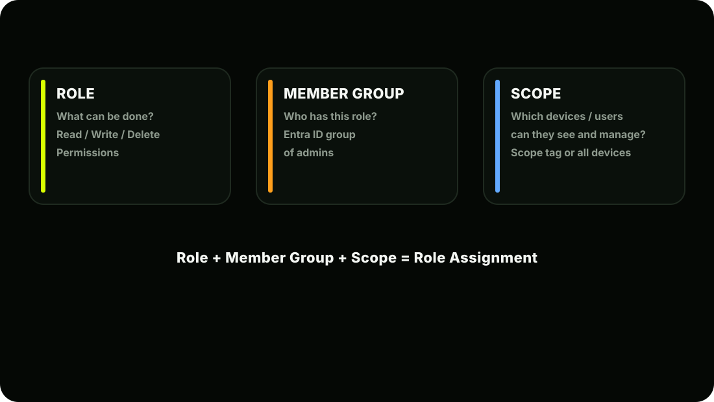
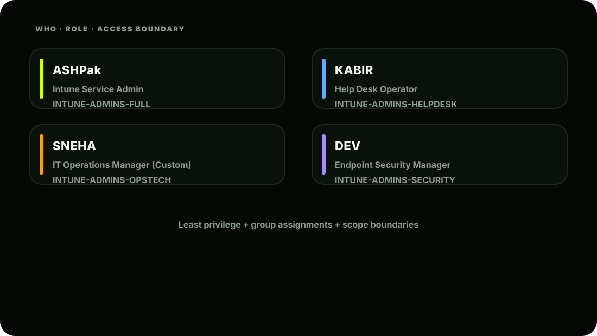

The Scene
Three new IT staff join AshScript this week: Kabir; Helpdesk Level 1. His job is to help users with device issues, reset passcodes, and sync devices. Nothing more. Sneha; IT Operations. She deploys apps and manages configuration profiles. She should NOT be able to touch security policies or wipe devices. Dev; IT Security Analyst. He monitors compliance and security policies but should not be able to change device configurations or deploy apps.
Riya pulls Ashpak aside:
"I need all three in Intune. But Ashpak; I want surgical precision on what each of them can do. Kabir once accidentally deleted a GPO in AD because he had too many permissions. I don't want a repeat of that in Intune."
Ashpak nods. This is exactly what RBAC is built for.
What is RBAC?
RBAC stands for Role-Based Access Control. It's the system that answers one question:
"Who is allowed to do what, on which devices, in which part of the Intune environment?"
Without RBAC, your only options are: Give someone full admin access (dangerous) Give someone no access (useless)
With RBAC, you can be surgically precise:
1 Kabir → Can sync devices + reset passcodes 2 Cannot wipe devices
The Three Components of RBAC
Let's break each one down.

Component 1: Roles
Intune has two types of roles:
Type 1: Built-in Roles
Microsoft provides ready-made roles covering the most common scenarios. Here are the most important ones: Built-in roles cannot be modified. They are fixed by Microsoft. If a built-in role is almost right but not quite; that's when you create a custom role.
Type 2: Custom Roles
When no built-in role fits perfectly, you build your own from scratch by selecting exactly which permissions to include. AshScript example: Sneha needs to deploy apps AND manage configuration profiles; but the built- in Application Manager only covers apps, and Policy and Profile Manager only covers profiles. Neither fits exactly. So Ashpak creates a custom role combining both sets of permissions.
| Role Name | What They Can Do |
|---|---|
| Intune Service Administrator | Full access to everything in Intune; the top-level Intune admin role (Ashpak's daily role) |
| Help Desk Operator | View devices and users; perform remote actions: sync, lock, reset passcode; cannot create/edit policies; cannot wipe devices |
| Application Manager | Create and manage apps; create app protection policies; cannot manage devices; cannot touch security policies |
| Policy and Profile Manager | Create configuration profiles; create compliance policies; cannot manage apps; cannot perform remote actions |
| Read Only Operator | Can VIEW everything in Intune; cannot change ANYTHING; perfect for auditors |
| Endpoint Security Manager | Manage security baselines; manage compliance policies; manage Defender settings; cannot deploy apps; cannot manage configurations |
| School Administrator | Manage education-specific features (Intune for Education scenarios) |
Component 2: Member Groups
The member group is the Entra ID group that contains the IT admins who will receive the role.
Warning: Important distinction: Member groups contain IT administrators; not end users. Don't confuse these with the device/user groups we created in Lesson 2.3. Those are for policy targeting. These are for admin access control.
Component 3: Scope (Scope Tags)
Scope answers: "Which devices and users can this admin see and manage?" By default, an admin can see all devices and users in Intune. Scope Tags let you restrict this so an admin only sees what's relevant to them.
We'll go deep on Scope Tags in Lesson 9.4. For now, understand the concept; when no scope tag is applied to a role assignment, the admin sees everything (the default behaviour).
Building AshScript's RBAC Structure
Now let's do the real work. Here's what Ashpak needs to build: STEP 1; Create Admin Member Groups in Entra ID First, Ashpak creates static groups in Entra ID for each admin tier:
STEP 2: Navigate to Intune Roles
You'll see all the built-in roles listed here. Let's start with Kabir.
STEP 3: Assign Help Desk Operator to Kabir
- Now Kabir can log into intune.microsoft.com and:
- View all devices
- Sync a device
- Lock a device remotely
- Reset a passcode
- Cannot create or edit any policy
- Cannot wipe a device
- Cannot deploy apps
STEP 4: Create a Custom Role for Sneha
Sneha needs app management + configuration profile management. No built-in role covers both. Ashpak builds a custom role:
Now comes the permission selection. Ashpak carefully picks:
Now assign it to Sneha:
STEP 5: Assign Endpoint Security Manager to Dev
- Dev can now:
- View and edit compliance policies
- Manage security baselines
- View Defender settings
- Cannot deploy apps
- Cannot create configuration profiles
× Cannot perform remote device actions
| Person | Role | Can Do |
|---|---|---|
| Ashpak | Intune Service Admin | Everything in Intune |
| Kabir | Help Desk Operator | View + limited remote actions (sync, lock, reset passcode) |
| Sneha | IT Operations Manager (Custom) | Deploy apps + manage config profiles |
| Dev | Endpoint Security Mgr | Compliance + security baselines + Defender |
| Riya | Read Only Operator | View everything; change nothing (Executive oversight) |
Verifying Role Assignments Work
How Kabir Sees Intune vs How Ashpak Sees It:
Checking What Role a User Has:
Or check from the user's perspective:
RBAC vs Entra ID Admin Roles: Know the Difference
This confuses many beginners. There are two separate permission systems at play: Critical point: The Intune Administrator role in Entra ID gives someone full control of Intune; equivalent to Intune Service Administrator in Intune RBAC. Assigning someone Global Administrator in Entra ID gives them full access to everything; including Intune; regardless of Intune RBAC settings. RBAC only applies to users who access Intune WITHOUT a Global Admin or Intune Admin Entra role.
| Entra ID roles | Intune RBAC roles |
|---|---|
| Controls access to the entire Microsoft 365 ecosystem | Controls access WITHIN Intune specifically |
| Examples: Global Administrator; User Administrator; Intune Administrator; Security Administrator | Examples: Intune Service Admin; Help Desk Operator; Application Manager; Endpoint Security Manager |
| Assigned in: entra.microsoft.com → Roles → Assignments | Assigned in: intune.microsoft.com → Tenant Admin → Roles |
| Affects: Users, licences, tenant settings, Conditional Access | Affects: Devices, apps, policies, compliance, remote actions within Intune only |
RBAC Best Practices: The AshScript Standard
Ashpak documents these as AshScript's official RBAC rules:
AshScript's Final RBAC Map

AshScript's Current State After Lesson 2.4
Key Concepts to Lock In
| Concept | Remember This |
|---|---|
| RBAC | Controls who can do what in Intune |
| Three components | Role + Member Group + Scope = Assignment |
| Built-in roles | Fixed by Microsoft; cannot be modified |
| Custom roles | Build from scratch; choose exact permissions |
| Member group | Entra group containing the IT admins |
| Scope | Which devices/users the admin can see |
| Least privilege | Always minimum permissions needed |
| Assign to groups | Never assign roles directly to individuals |
| Entra vs Intune roles | Two separate systems; understand both |
| Global Admin override | Global Admin bypasses all Intune RBAC |